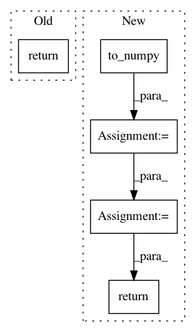

6671f9d02fc5e90d3d64dfa7bf4f9f9abd0826f1,pycox/models/cox_cc.py,CoxTime,compute_baseline_hazards,#CoxTime#Any#Any#Any#Any#Any#Any#,145
Before Change
input, target = self.training_data
else:
input, target = self._sorted_input_target(input, target)
return super().compute_baseline_hazards(input, target, max_duration, sample, batch_size, set_hazards)
def _compute_baseline_hazards(self, input, df_train_target, max_duration, batch_size):
"""Computes the breslow estimates of the baseline hazards of dataframe df.
After Change
df = df.sample(n=sample)
else:
df = df.sample(frac=sample)
input = tuplefy(input).to_numpy().iloc[df.index.values]
base_haz = self._compute_baseline_hazards(input, df, max_duration, batch_size)
if set_hazards:
self.compute_baseline_cumulative_hazards(set_hazards=True, baseline_hazards_=base_haz)
return base_haz
// return super().compute_baseline_hazards(input, target, max_duration, sample, batch_size, set_hazards)
def _compute_baseline_hazards(self, input, df_train_target, max_duration, batch_size):
"""Computes the breslow estimates of the baseline hazards of dataframe df.
In pattern: SUPERPATTERN
Frequency: 3
Non-data size: 5
Instances
Project Name: havakv/pycox
Commit Name: 6671f9d02fc5e90d3d64dfa7bf4f9f9abd0826f1
Time: 2019-02-19
Author: haavard.kvamme@gmail..com
File Name: pycox/models/cox_cc.py
Class Name: CoxTime
Method Name: compute_baseline_hazards
Project Name: tensorly/tensorly
Commit Name: 975c84b15a5bdec14d2b326b985e2ac15bc099b8
Time: 2018-09-19
Author: zli@wustl.edu
File Name: tensorly/backend/mxnet_backend.py
Class Name:
Method Name: inverse
Project Name: tensorly/tensorly
Commit Name: 6be1f6d9be00190becf2ea3ee0eee28ab3af8943
Time: 2018-09-08
Author: zli@wustl.edu
File Name: tensorly/backend/mxnet_backend.py
Class Name:
Method Name: inverse